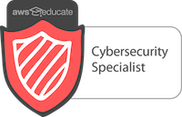
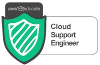
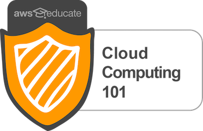

Professional Training and Certifications
Sable Cantus
Certified Information Systems Security Professional (CISSP)

CompTIA Security+

Amazon Web Services (AWS) Certifications
- Amazon Web Services (AWS) Solutions Architect Associate - August 2019
- Amazon Web Services (AWS) Certified Cloud Practitioner - June 2019


Amazon Web Services (AWS Educate)
- Cloud Architect - Cyber Security Specialist - AWS Digital Credential
- Cloud Support Engineer - AWS Digital Credential
- Cloud Computing 101 - AWS Digital Credential

Certificate of Completion: DevSecOps Integrating Security Into DevOps
Understanding Cisco Cybersecurity Operations
- 100 hours
- Certificate of Completion
- July 2018
Cisco Networking Academy Connecting Things
- Certificate of Completion, Certified Instructor
- June 2018
- 36 hours
Understanding Cisco Cybersecurity Fundamentals
- 100 hours
- Certificate of Completion
- May 2018
BIE Project Based Learning
WASTC Faculty Development: Certified Ethical Hacker
- 36 hours
- 6/26/17 - 6/30/17
Apple Teacher - 2016

WASTC Faculty Development; Teaching Programming Fundamentals using Python
- 36 hours
- 6/20 - 6/24/2016
Solid State Logic AWS 924 Training
Avid Sibelius Certified Instructor

Pro Tools 100 Certified Instructor

On Course I
- Certificate
- 3 days
- 8/15/2015
Adobe Certified Associate - Visual Communication Using Adobe Photoshop
Enhancing Basic Skills Across the Curriculum
Designing Learner Centered Instruction
Teaching & Engaging Students in CTE-STEM Careers thru Gaming: A Minecraft Workshop
Oracle APEX Four Day Workshop
- 30 hours
- 8/11/14 - 8/14/14
CFA The Unconscious Bias Program
- Certificate
- 24 hours
- Modules 1 - 4: 1/17 - 1/18 2013
- Modules 5 - 6: 9/20/2013